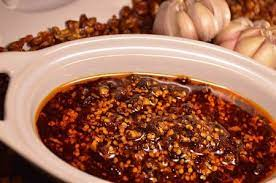

Tangy and sweet with a bit of a bite. Quick and easy, and always requested at gatherings.
Take into account that the name of this sauce is not accidental. It is called like that because it is very spicy, suitable only for people who have a hard time with chili. Nothing like some tacos de suadero with onion and coriander, or with seasoned mushrooms, with a few drops of this incendiary beauty that can last for months in the refrigerator.
Many of us love machas sauces, but we don't know how to make them. Say no more and let's get to work. In addition, the recipe that we share with you today is special because comes direct from Orizaba, Veracruz. Normally it is not so common for this type of sauce to be made with serrano pepper, but in that region of the country it is. Once you try it, you will discover how rich it is.
This simple recipe can be made with the basic utensils of any kitchen, you will only need to use a frying pan and a blender, although if you want to make it in a traditional way, a good stone molcajete is the basic kitchen utensil for sauces.
Let's get started!

For 15 people
Difficulty: Easy
Total time: 15 minutes
Cook in 15 minutes
Ready: your macha sauce is very ready for you to enjoy in any stew. But of course! take it light because it has a good level of itching.
HOME